The idea
Three pre-bent steel beams push, absorb,
and feel the contact force.
Three pre-bent spring-steel beams sit between a motor-driven platform and the tool. Bending them presses the tool onto the workpiece, their flexibility absorbs uneven surfaces and small errors in the robot's motion, and a strain gauge on each beam reads how far it bends.
A model of the bent beams turns those readings into the contact force, so the end-effector controls the force from its own sensing, with no separate force sensor in the loop. On a robot arm it held set forces of 10 to 30 N on flat, wavy, sloped and vertical surfaces, and in grinding it cut the swing of the contact force from 7.13 N to 1.38 N.
01 / Why force control
Grinding needs
a steady touch.
Why not just bolt a grinder onto a robot arm?
The quality of a ground surface depends on a steady contact force. Manual grinding controls the force by experience, but it is hard to keep steady and costly in labor. Machine tools and robot arms are flexible and accurate in position, yet they fall short in controlling force. An end-effector at the tip of the arm can add that control.
Existing force-controlled end-effectors take three routes. Constant-force mechanisms give a steady force without control, but the force cannot be adjusted during the task. Active end-effectors with sensors and controllers adjust the force in real time, but without compliance they overshoot when they meet the workpiece. Hybrids add compliant parts to active control, but still rely on force sensors outside the end-effector.
This end-effector puts both in the same parts: elastic beams make it compliant and produce the force, and strain gauges embedded in those beams sense it.
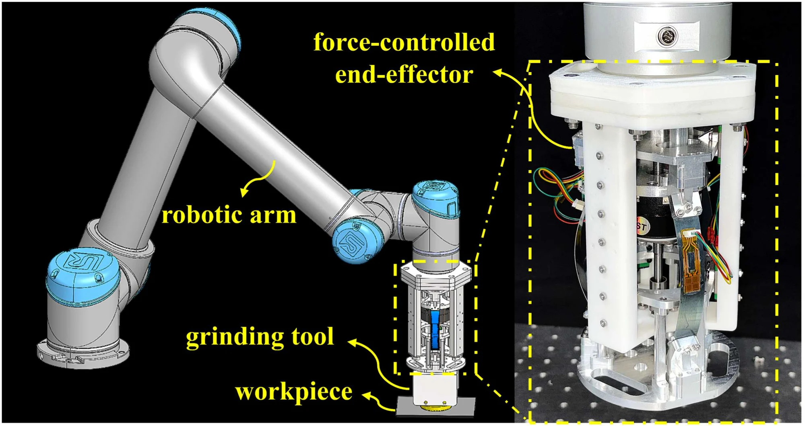
02 / Mechanical design
Springs that push
and feel.
How can one device make, absorb and sense force?
A motor with a leadscrew sits in the middle of the end-effector and drives a moving platform along three guide rails set 120° apart. Three slender spring-steel beams, also 120° apart, join the moving platform to a middle platform, which slides on the same rails and carries the end platform with the tool. Each beam is a straight strip, pre-bent when its ends are mounted in connectors angled at 30°.
When the motor moves the platform, the beams bend further and press the tool onto the workpiece; their flexibility lets the tool give way to bumps and to small errors in the robot's motion. The beams also make the end-effector soft sideways, so a linear bearing at the bottom of the frame guides the end of the leadscrew and keeps the platform moving straight along its axis.
Each beam is 80 mm long with a 14 × 0.25 mm cross-section, and carries a flexible strain gauge built into a flexible printed circuit and glued to the beam. The frame is 3D-printed plastic; the moving platform and the beams' connectors are aluminum alloy.

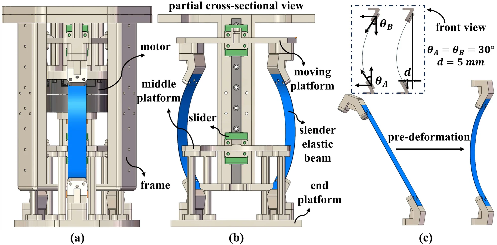
Motor
The leadscrew moves the platform that holds the beams' upper ends
Beams bend
The pre-bent beams bend further, press the tool onto the workpiece and give way to bumps
Gauges read
A strain gauge on each beam reads its bending, and the model turns the readings into the contact force
03 / Sensing and control
From bending
to force.
How does a strain reading become a contact force?
The model divides each beam into many short segments joined by elastic joints, which turns its large deflection into the statics of a chain of rigid links. The three beams and the platforms are solved together, so for a target force the model gives the shape the beams must take and the motor position that produces it.
The gauge on each beam reads the bending under it: its voltage changes linearly with the local curvature. Each gauge was calibrated on a test rig, where a laser sensor measured the distance between the beam's ends in 22 configurations. With the three readings added, the model reconstructs the beams' shape and the force they exert.
One control board combines an STM32 microcontroller, which drives the motor, with the sampling circuit for the gauges. A PID loop compares the sensed shape of the beams with the shape the model requires for the target force, and moves the motor to close the gap. For the tests, the end-effector was mounted on a UR10 robot arm.

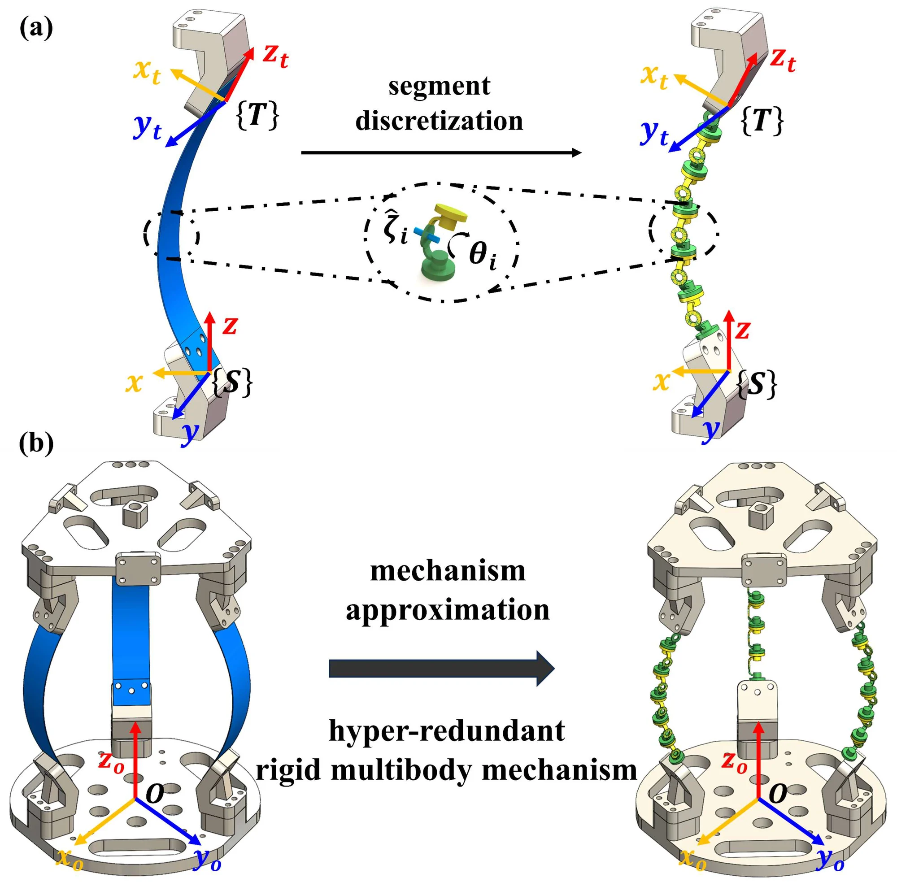

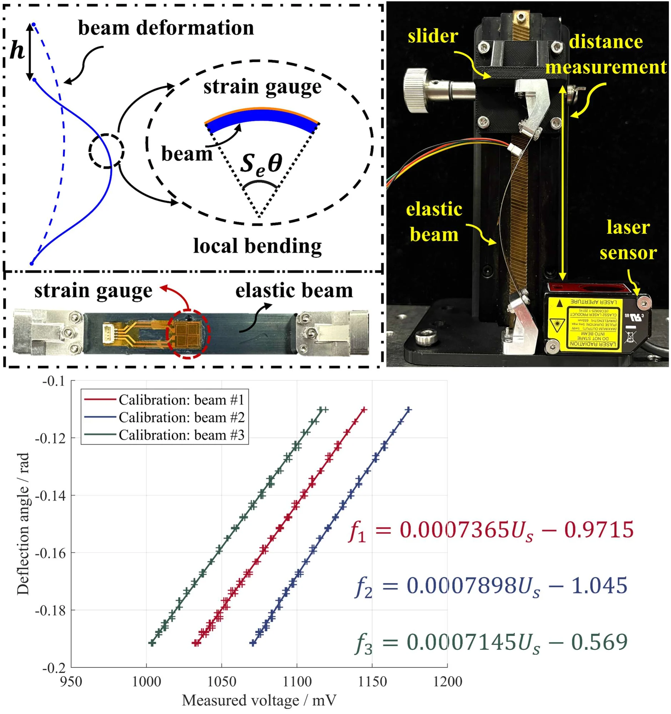
Thirty motor settings, each measured five times with a six-axis force sensor, gave output forces up to about 37 N that varied by no more than 0.55 N. Across 14 target forces, the force the end-effector produced was within 0.65 N of the target on average, and the force read from its gauges within 0.7 N. Following a sinusoidal and a stepped force, the RMS errors were 0.44 N and 0.32 N, and the largest errors 1 N and 0.75 N; the errors grew mostly at the peaks and troughs, which the authors attribute to inertia during the motion.
See the force and tracking tests
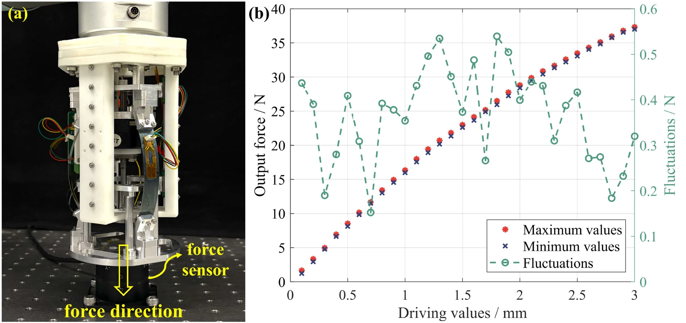
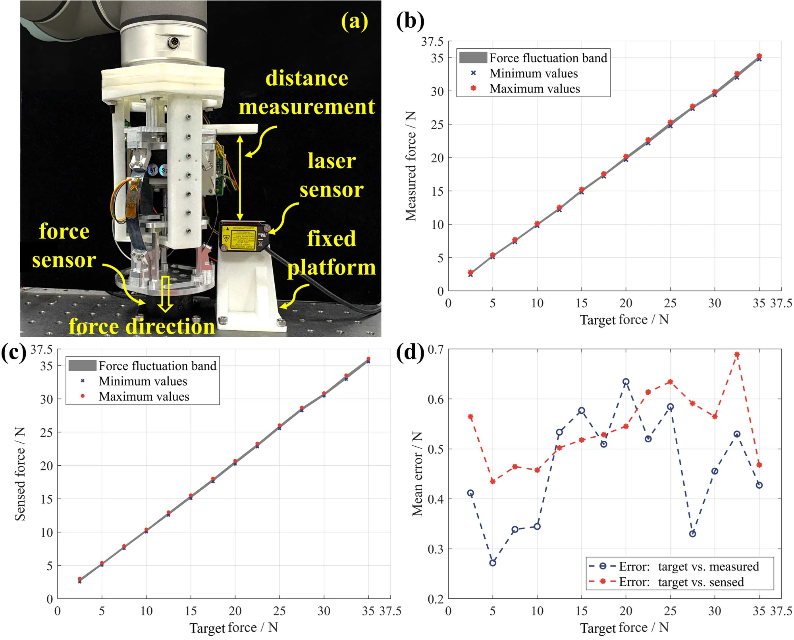

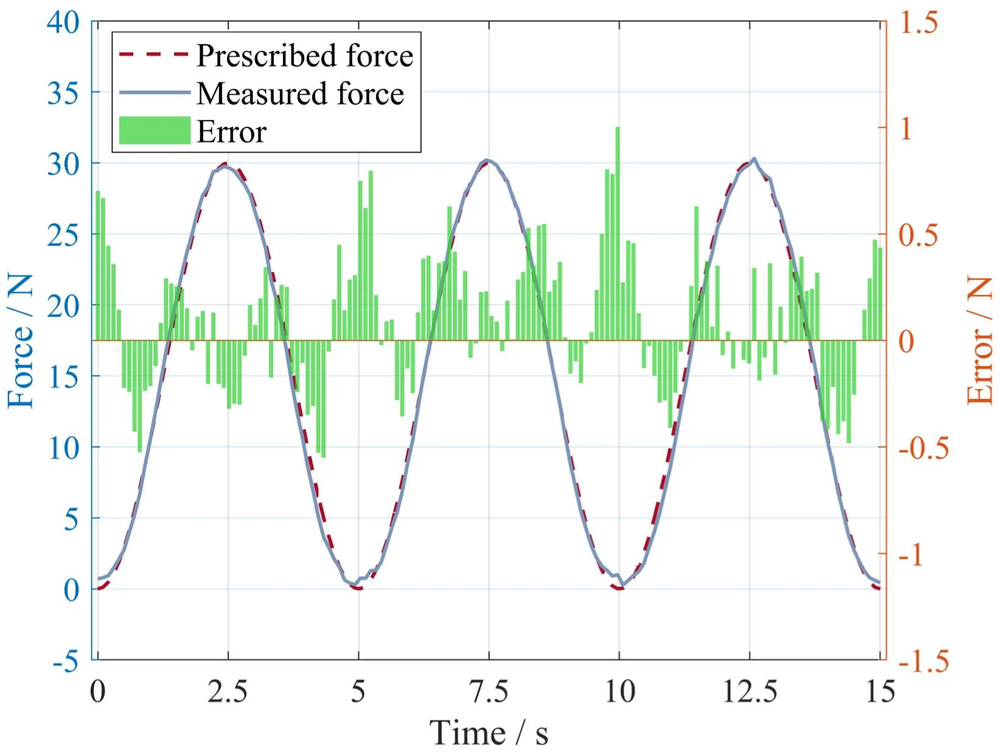

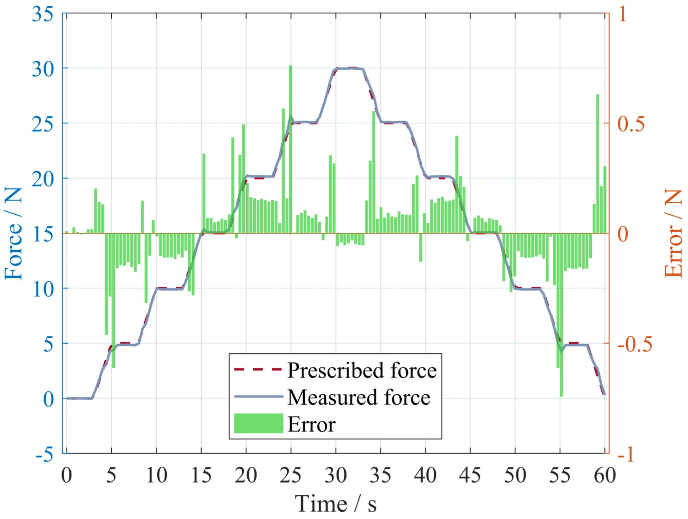
04 / Constant-force control
Holding the force
on any surface.
How steady is it on flat, wavy, sloped and vertical surfaces?
With a set of pulleys at its output, the end-effector was pressed against four surfaces while the robot arm moved it along them on a fixed path. The end-effector held the target force from its own gauge readings. Each surface was tested at target forces of 10, 20 and 30 N and at 6.25, 12.5 and 20 mm/s.
On a 250 mm flat plate the force stayed within ±1.35 N of the target in every run, and within ±1 N for 10 N at the two lower speeds.
The second surface is a sine wave. The force followed its shape, rising and falling with the waves, and stayed within ±1.80 N at 10 and 20 N; at 30 N the fluctuation reached ±2.05 N at the highest speed.
Fixed on a 30° slope, with the arm moving parallel to it, the wavy surface gave results close to the horizontal ones: within ±1.79 N at 6.25 mm/s, and ±1.98 N at most.
With the wavy surface standing vertically and the arm moving upward, the fluctuation stayed within ±1.99 N, close to the horizontal and sloped tests.
| Robot speed | ||||
|---|---|---|---|---|
| Surface | Target force | 6.25 mm/s | 12.5 mm/s | 20 mm/s |
| Flat | 10 N | ±0.74 N | ±0.99 N | ±1.16 N |
| 20 N | ±1.02 N | ±1.06 N | ±1.24 N | |
| 30 N | ±1.05 N | ±1.13 N | ±1.35 N | |
| Wavy | 10 N | ±1.55 N | ±1.54 N | ±1.78 N |
| 20 N | ±1.68 N | ±1.73 N | ±1.80 N | |
| 30 N | ±1.88 N | ±2.04 N | ±2.05 N | |
| Slope | 10 N | ±1.52 N | ±1.69 N | ±1.78 N |
| 20 N | ±1.61 N | ±1.71 N | ±1.84 N | |
| 30 N | ±1.79 N | ±1.97 N | ±1.98 N | |
| Vertical | 10 N | ±1.47 N | ±1.68 N | ±1.79 N |
| 20 N | ±1.59 N | ±1.70 N | ±1.82 N | |
| 30 N | ±1.81 N | ±1.93 N | ±1.99 N | |
Across all 36 runs, the fluctuation ranged from ±0.74 N, on the flat plate at 10 N and the lowest speed, to ±2.05 N, on the wavy surface at 30 N and the highest speed. Faster motion and larger forces made the force less steady. The controller could respond faster with a higher sampling rate and motor frequency, but it then overshoots more easily, so the tests kept to these three speeds. Gentle curves behave almost like a flat surface; on sharper ones, controlling force along a single axis becomes the limit.
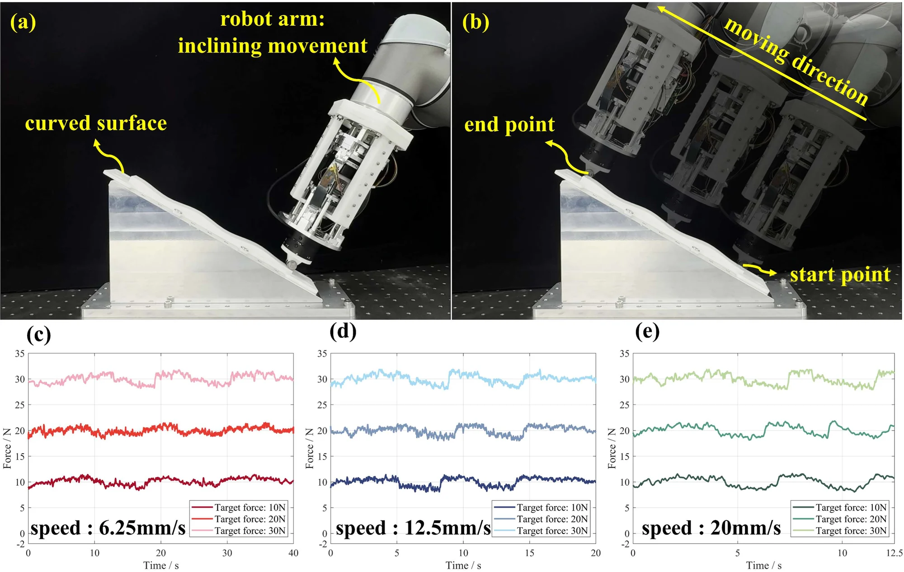
05 / Grinding
Grinding
with feeling.
Does force control change the finish?
For grinding, a grinding tool took the place of the pulleys, and the workpiece had a fully black oxidized surface. The robot arm moved the tool across it horizontally with a 5 N target, in two sets of experiments: one with force control and one without.
Without force control, the contact force swung over a range of 7.13 N and the black oxide was only partly removed. With force control, the range shrank to 1.38 N, about 80% less, and the oxide came off evenly. The surface roughness Ra fell from 9.630 µm before grinding to 7.740 µm when ground without force control, and to 1.961 µm when ground with it.
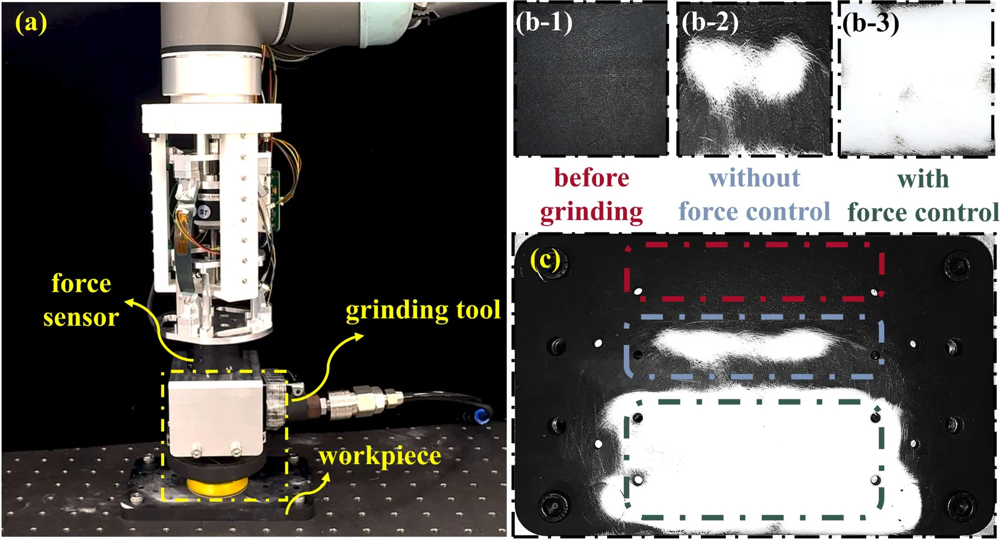
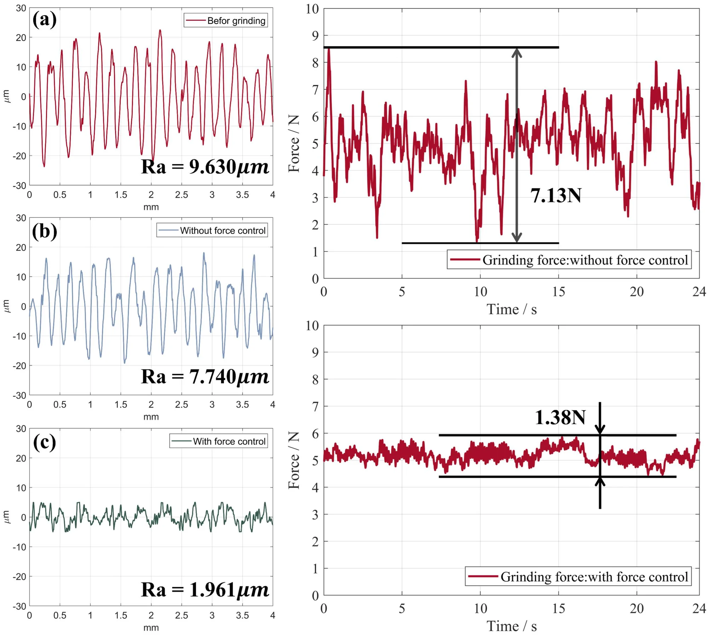
The same comparison on an inclined workpiece and on a vertical one gave similar gains: the swing of the force fell from 6.73 N to 1.40 N, and from 7.51 N to 1.46 N.

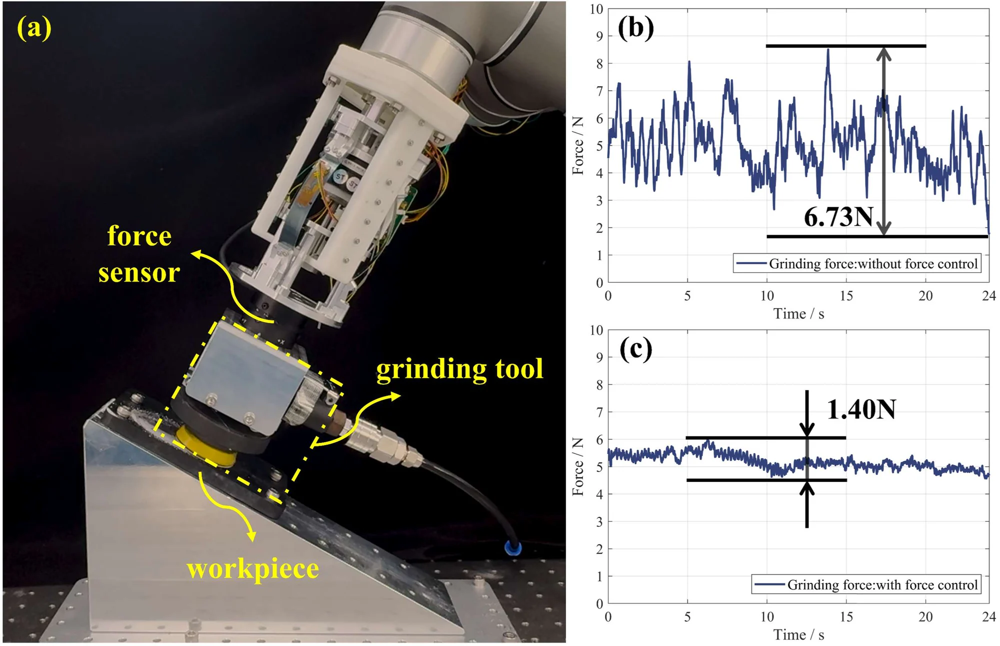
See the vertical grinding test
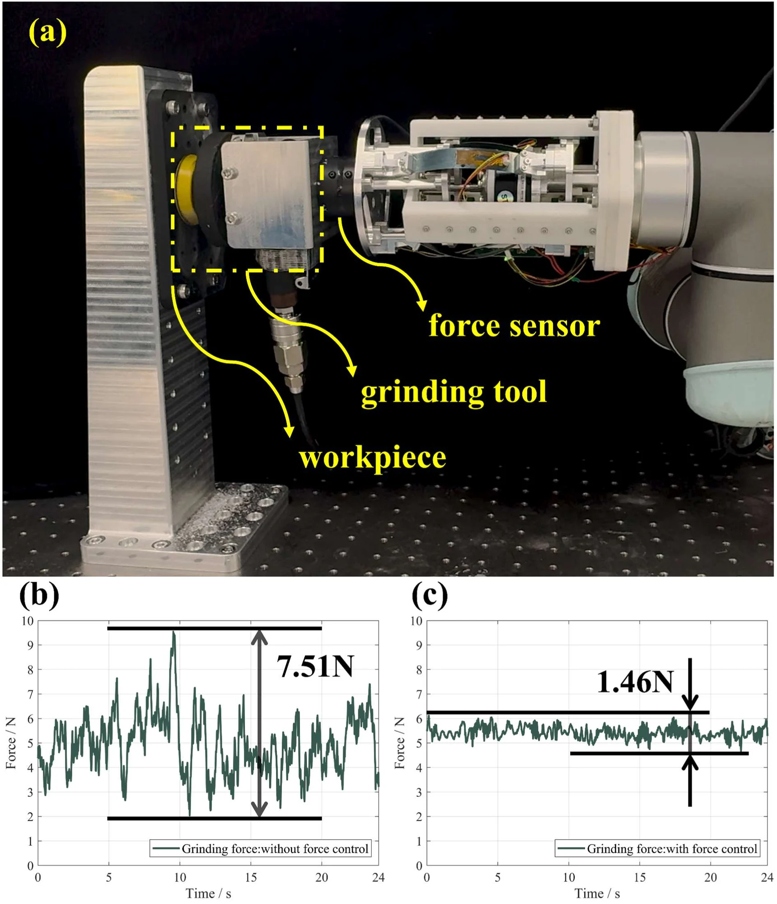
Questions & answers
Common questions.
Where is the force sensor?
The strain gauges on the three beams, together with the model, are the force sensor; the controller uses no other. A six-axis force sensor served only as a reference, to measure the output force in the tests.
How accurate is it?
Across 14 target forces, the force the end-effector produced was within 0.65 N of the target on average, and the force read from its gauges within 0.7 N. Following a sinusoidal and a stepped force, the RMS errors were 0.44 N and 0.32 N.
Does it work on slopes and walls?
Yes. On the wavy surface fixed on a 30° slope, the force stayed within ±1.98 N, and on the same surface standing vertically within ±1.99 N, close to the horizontal tests. Grinding on inclined and vertical workpieces steadied the force about as much as on the horizontal one.
What are its limits?
It controls force along one axis only, so the force varies more on sharply curved surfaces. Faster motion would need a higher sampling rate and motor frequency, which make overshoot and instability more likely. The authors plan a three-degree-of-freedom version that controls orientation and force together, and more sensitive sensing for a faster response.
Paper & authors
Compliance and sensing
in one end-effector.
Design of a Novel Force-Controlled End-Effector With Passive Structural Compliance and Intrinsic Contact Sensing
Tianyi Yan, Jianhuan Chen, Siyue Yao, Xuyang Duan, Yanjun Wang, Hao Wang, and Genliang Chen.
IEEE Transactions on Automation Science and Engineering, vol. 22, pp. 23202–23213, 2025.
Citation / BibTeX
@article{yan2025endeffector,
title = {Design of a Novel Force-Controlled End-Effector With Passive Structural Compliance and Intrinsic Contact Sensing},
author = {Yan, Tianyi and Chen, Jianhuan and Yao, Siyue and Duan, Xuyang and Wang, Yanjun and Wang, Hao and Chen, Genliang},
journal = {IEEE Transactions on Automation Science and Engineering},
volume = {22},
pages = {23202--23213},
year = {2025},
publisher = {Institute of Electrical and Electronics Engineers (IEEE)},
doi = {10.1109/TASE.2025.3627234}
}Full affiliations
- Shanghai Key Laboratory of Intelligent Robotics, Shanghai Jiao Tong University, Shanghai, China
- Meta Robotics Institute, Shanghai Jiao Tong University, Shanghai, China
- State Key Laboratory of Mechanical System and Vibration, Shanghai Jiao Tong University, Shanghai, China
- Institute of Marine Equipment, Shanghai Jiao Tong University, Shanghai, China
- Shanghai Key Laboratory of Digital Manufacturing for Thin-Walled Structures, Shanghai Jiao Tong University, Shanghai, China
* Corresponding author: Genliang Chen
Supplementary video
Watch the demonstration video.
The supplementary video: the mechanical design, constant-force control on the flat, wavy, sloped and vertical surfaces, and grinding on horizontal, inclined and vertical workpieces.